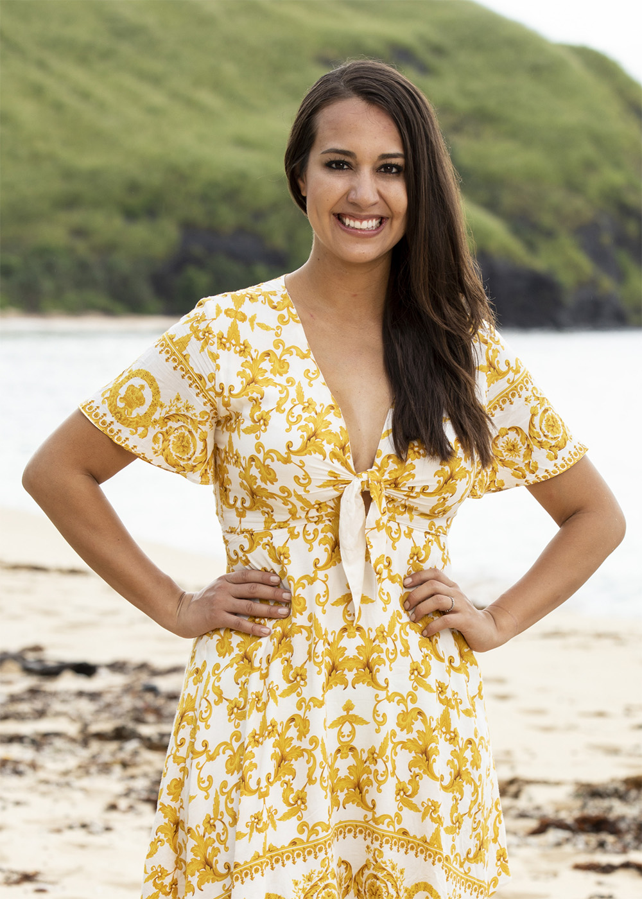
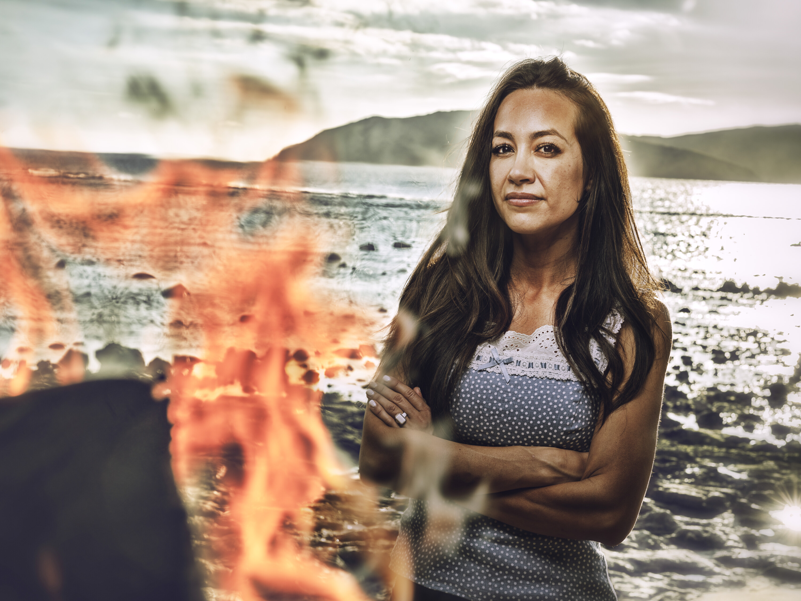

Angelina Keeley


Episode 1
Angelina received minimal screen time and was not shown joining any specific alliance. She was notably absent from the core Colby/Stephenie/Kyle/Genevieve majority group. Vatu won immunity so no Tribal Council.
Episode 2
Angelina continued to receive limited screen time as Vatu won immunity again, avoiding Tribal Council for the second consecutive week. Her unaligned status makes her a wild card heading into any shakeup.
Alliances
Unaligned. With the majority alliance crippled (Kyle medevacked, Colby and Q both without votes), Angelina is a potential swing vote. She could form a counter-bloc with Aubry and Rizo that would control the outcome if her group goes to Tribal.
About
Angelina Keeley first played on David vs. Goliath (Season 37), where she became one of the most memorable characters of the season. She is among the players advocating for fewer twists and a back-to-basics approach to the game. Since her first season, becoming a parent has fundamentally reshaped how she views pressure and risk in the game.